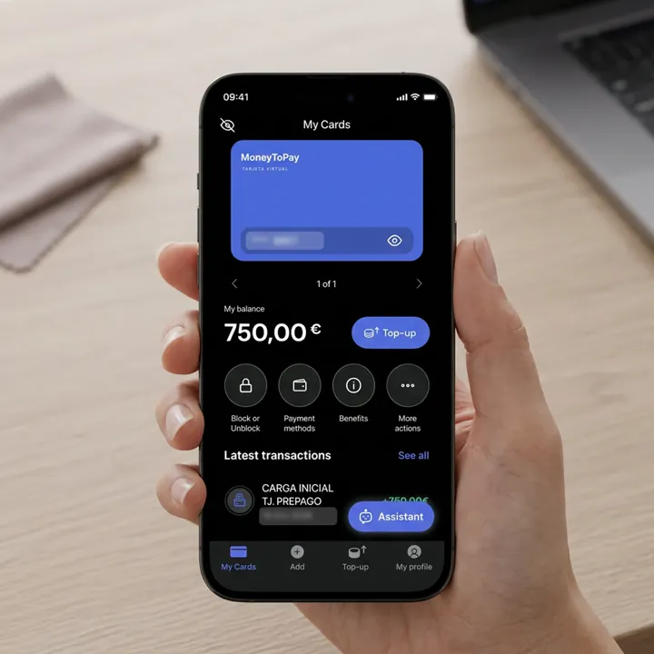
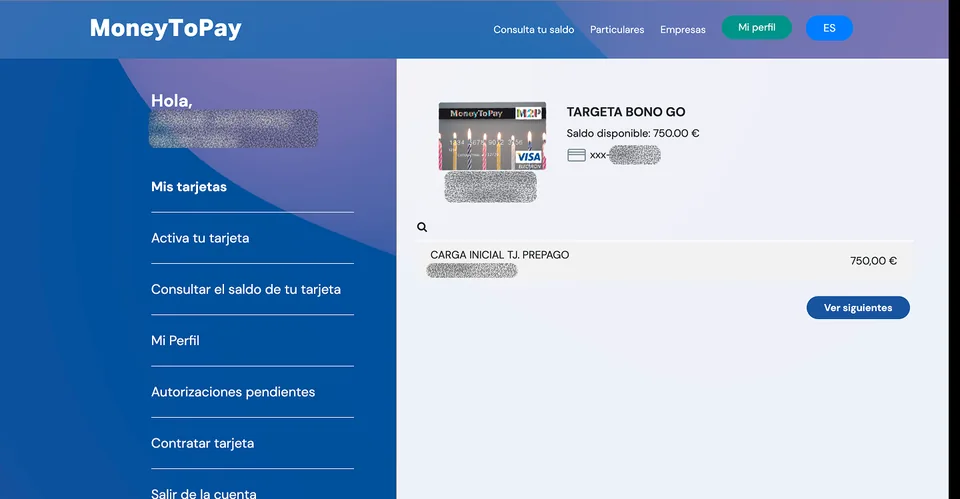
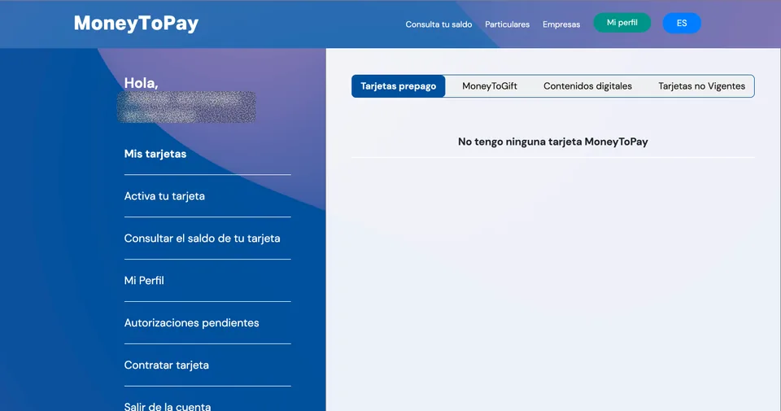
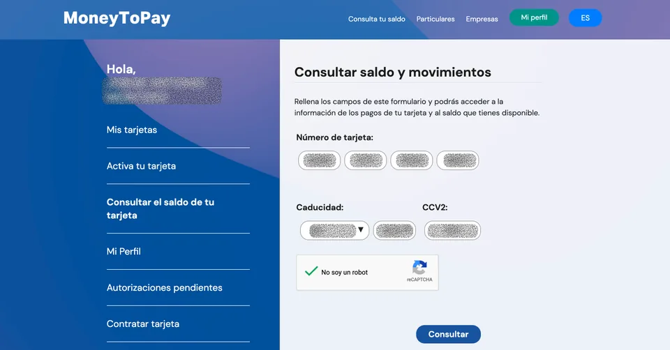
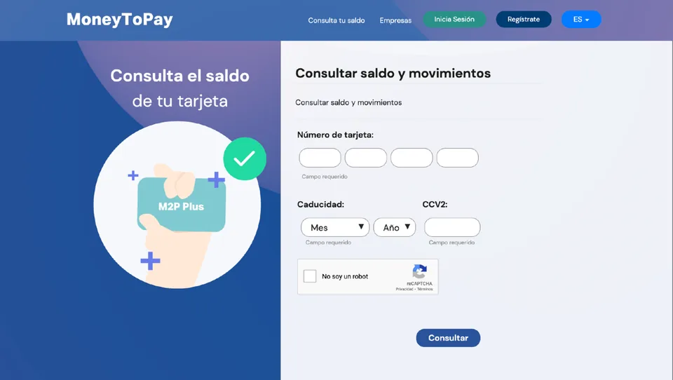

معرفة الرصيد
من المفيد التحقق منه قبل عملية شراء كبيرة: إذا تجاوز المبلغ الرصيد، تُرفض العملية.
من الهاتف المحمول، بتطبيق MoneyToPay
أسهل طريقة لمعرفة الرصيد قبل الدفع.
- نزّل تطبيق «MoneyToPay - Tarjeta prepago»: Google Play (أندرويد) أو App Store (آيفون).
- سجّل الدخول باسم المستخدم وكلمة المرور في MoneyToPay، وهما نفسهما اللذان أنشأتهما عند تفعيل البطاقة.
- في قسم بطاقاتي سترى البطاقة والرصيد المتاح وآخر الحركات.
لا ترى البطاقة على الموقع؟ أحيانًا لا تظهر البطاقة في moneytopay.com لكنها تظهر عند الدخول إلى التطبيق بالحساب نفسه. قبل أن تفترض أن البطاقة غير مرتبطة، تحقق من التطبيق أو اعرف الرصيد ببيانات البطاقة.

على الموقع، بحسابك في MoneyToPay
- ادخل إلى www.moneytopay.com باسم المستخدم وكلمة المرور.
- افتح «Mis tarjetas» (بطاقاتي): سترى البطاقة والرصيد المتاح.
- تظهر آخر الحركات في الأسفل. اضغط «Ver siguientes» (عرض المزيد) لرؤية الحركات السابقة.

إذا لم تظهر البطاقة في «Mis tarjetas»
قد يعرض الموقع رسالة «No tengo ninguna tarjeta MoneyToPay» (ومعناها: ليست لدي أي بطاقة) رغم أنك ربطت البطاقة. حدث هذا معنا: كانت البطاقة مسجّلة وتعمل، لكن الموقع لم يكن يعرضها.

ومع ذلك يمكنك معرفة الرصيد بطريقتين:
- في القائمة الجانبية، اضغط «Consultar el saldo de tu tarjeta» (معرفة رصيد بطاقتك)، واكتب الرقم وتاريخ الانتهاء وCVV2، وضع علامة على «No soy un robot» واضغط «Consultar».
- ادخل إلى تطبيق MoneyToPay بالحساب نفسه: عادة تظهر البطاقة هناك.

إذا لم تتمكن رغم ذلك من رؤية الرصيد، اتصل بـ MoneyToPay على 900 300 300.
على الموقع، بدون حساب
- في www.moneytopay.com، اضغط «Consulta tu saldo» (اعرف رصيدك).
- أدخل بيانات البطاقة، وضع علامة على «No soy un robot» (لست روبوتًا)، واضغط «Consultar» (استعلام).

من صراف CaixaBank الآلي
يمكنك معرفة الرصيد والحركات من أي صراف آلي تابع لـ CaixaBank. لكن لا يمكن سحب النقود.
الدليل الأصلي: Consulte su saldo (PDF بالإسبانية).